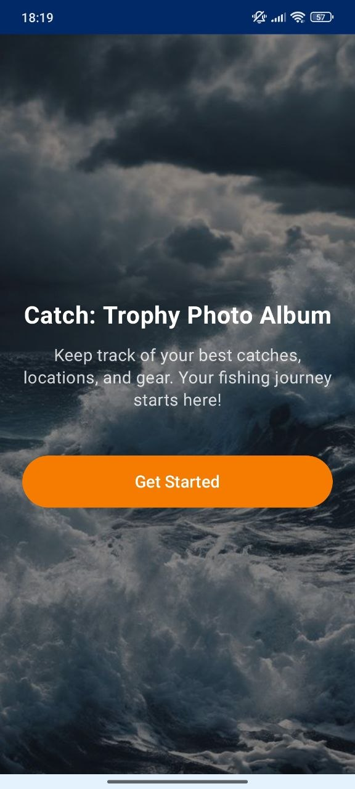
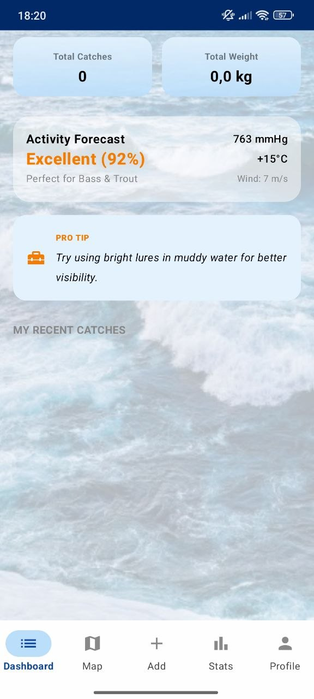
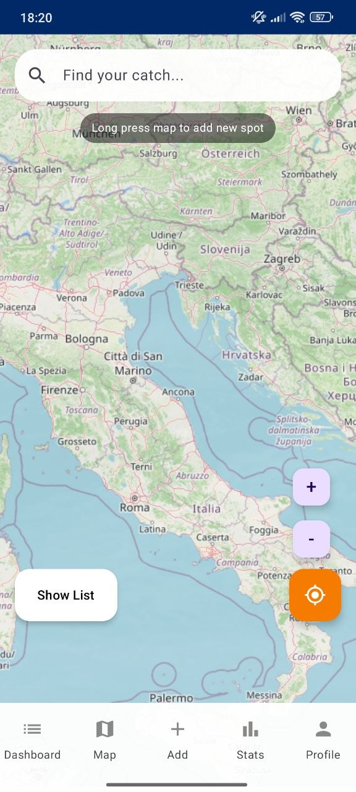
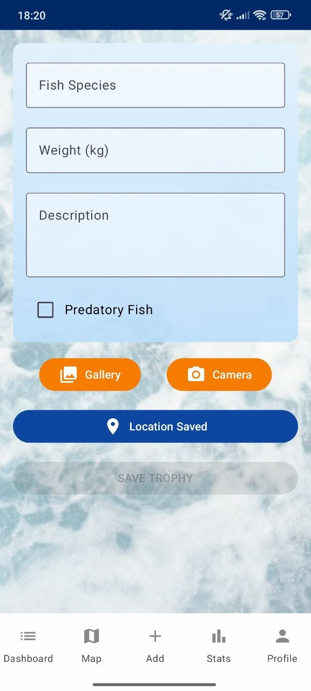
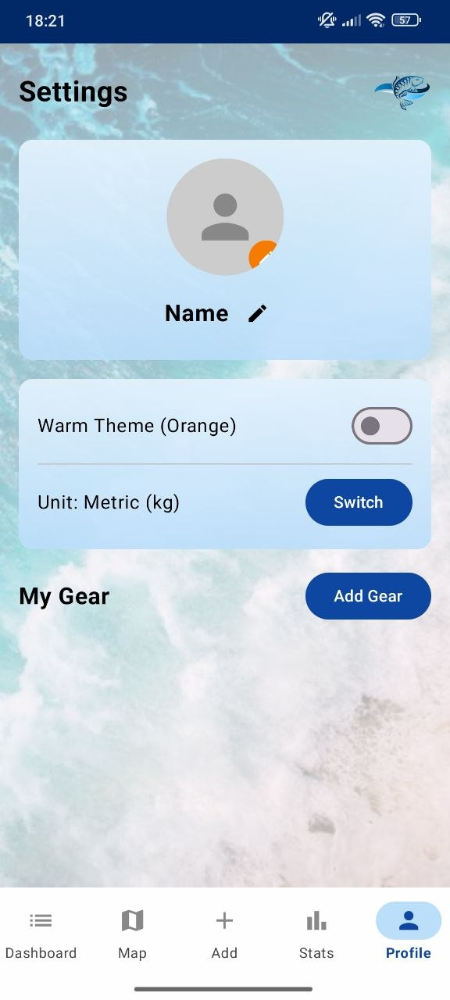
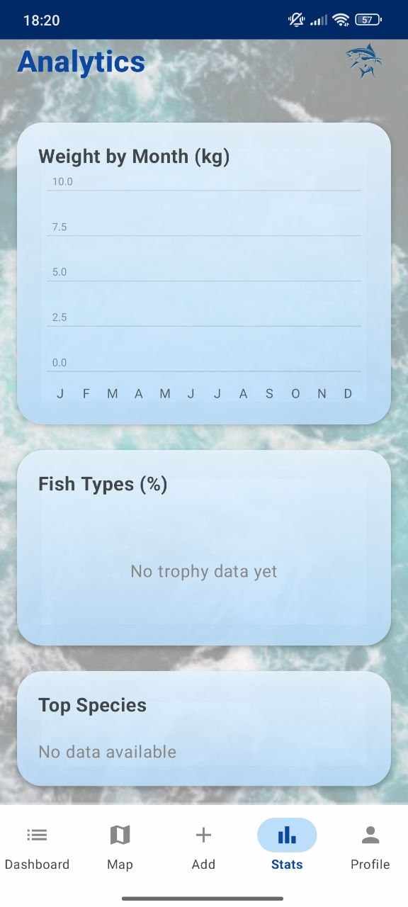

Trophy catch log
Add fish species, weight, description, photos, and predator fish status in one place.
Big Bass Trophy helps anglers track catches, save fishing spots, add trophy photos, record fish weight, manage gear, and review analytics in a premium ocean-inspired app.



Premium features
From trophy photos to map locations and analytics, the app gives your fishing journey a clean, practical, and visually strong structure.
Add fish species, weight, description, photos, and predator fish status in one place.
Search the map, save locations, view spots, and build a personal fishing geography.
Review pressure, temperature, wind, and fishing conditions before planning a trip.
Track weight by month, fish type percentages, and top species in a clear stats area.
Add rods and reels, switch units, edit profile name, and keep equipment organized.
Stormy water, bright orange actions, deep blue accents, and soft glassy panels.
Catch tracking
Big Bass Trophy turns each fishing memory into structured data. Add the fish, weight, description, photo source, saved location, and gear details without clutter.

Screen showcase
Preview the main experience: dashboard, map, add trophy, analytics, and profile settings.


Why it feels useful
Instead of losing catch details in photos or notes, Big Bass Trophy gives every catch a proper place with species, weight, location, gear, and analytics.
Track what you caught, where you caught it, and what gear helped you succeed.
Forecast cards and saved spots help you think before heading back to the water.
Analytics make your catches easier to understand over time.
Workflow
Review activity forecast, pressure, temperature, wind, and quick pro tips.
Use the map screen to search and save fishing locations.
Enter species, weight, description, photo, and trophy location.
Track weight by month, fish types, and top species across your catch history.
Highlights
The interface combines a fishing mood with practical tools for catch logging, gear control, location saving, and analytics.
“The map and catch log make it easy to remember where my best sessions happened.”
Weekend angler“I like that it tracks weight, photos, and gear in one place.”
Bass fisher“The ocean style and orange buttons make the app feel strong and memorable.”
Trophy hunterDownload now
Download Big Bass Trophy and track catches, locations, weight, fish species, gear, analytics, and fishing memories in one premium mobile app.